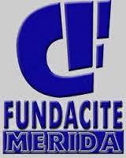

<<<<<<< HEAD
=======
>>>>>>> 8465edf0e77e20ba2507d5de75be701085e8d88b

Bienvenidos Academia de Software Libre FUNDACITE
En esta aplicacion podran realizar un reporte de las fallas que presentan los equipos de los Laboratorios, y generar asi una solicitud de soporte ecnico para proveer el mantenimiento correspondiente